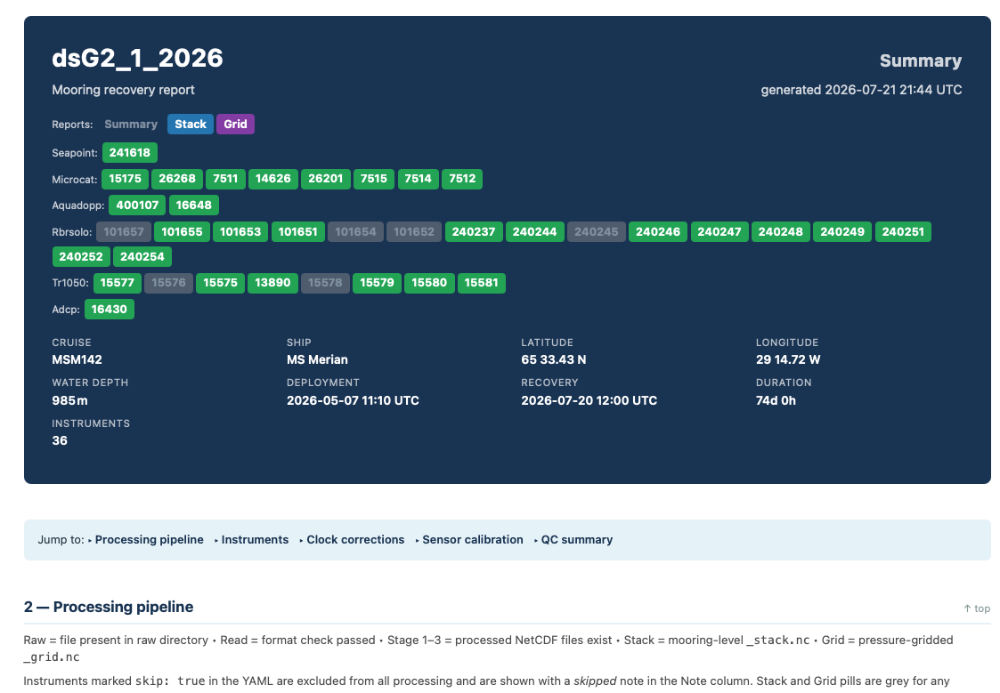
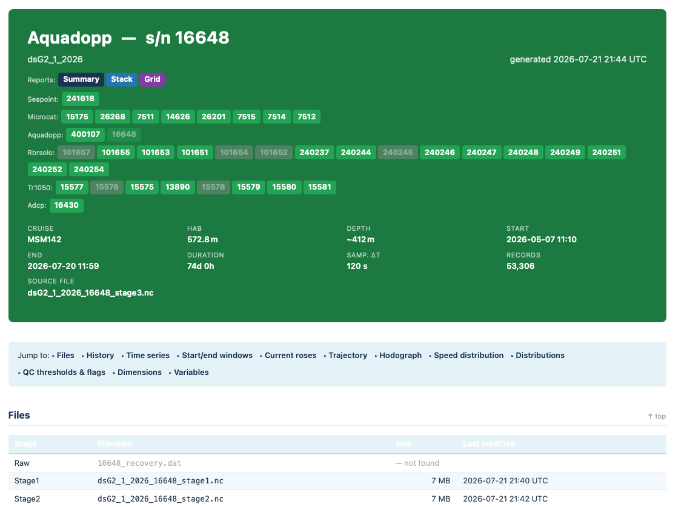
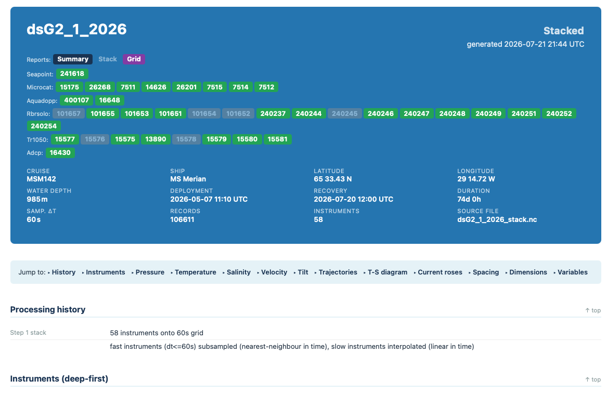
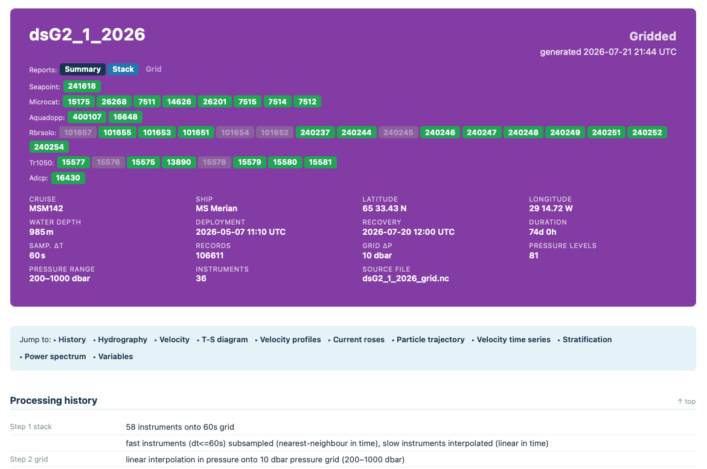

HTML Reports
oceanarray generates self-contained HTML reports at the end of processing.
Reports require no web server — open them directly in a browser. Each report
page is colour-coded by its scope: navy for the mooring Summary, blue
for the Stack, purple for the Grid, and green for per-instrument pages.
Generate reports with:
# Summary page only (fast)
oceanarray report MOORING --raw-dir $RAW --proc-dir $PROC
# Summary + per-instrument pages + stack + grid
oceanarray report MOORING --raw-dir $RAW --proc-dir $PROC \
--instruments --stack --grid
# Regenerate one instrument without touching others
oceanarray report MOORING --raw-dir $RAW --proc-dir $PROC \
--instruments --serial 16648
Or generate all reports in one go with oceanarray run (see CLI Reference).
Live example
The report suite below was generated from the dune2_1_2026 test mooring and
is hosted alongside these docs so you can explore the real output interactively.

Click to open the live dune2_1_2026 example report. It opens the
Summary page; the header pills link through to the Stack, Grid, and
per-instrument pages. Every figure is embedded in the page — no web server,
downloads, or extra assets needed.
Direct links to each page:
Report pages
Summary report
The Summary report header for mooring dsG2_1_2026. Each instrument type appears on its own row; green pills are instruments that reached Stage 3, grey pills are pending or skipped.
File: {proc_dir}/{mooring}/report/{mooring}_report.html
The Summary report is the first thing to open after processing. It shows:
Instrument inventory — all instruments in the YAML grouped by type (Microcat, Aquadopp, RBR Solo, ADCP, …). Each serial number is a pill button that links to the per-instrument page. Colour indicates processing status: green = reached Stage 3, grey = not yet processed or skipped.
Navigation pills — links to the Stack and Grid reports in the header.
Metadata cards — cruise, ship, latitude, longitude, water depth, deployment and recovery times, duration, instrument count.
Processing pipeline table — one row per instrument with Raw / Stage 1 / Stage 2 / Stage 3 / Stack / Grid status pills.
Clock corrections table — applied offset and drift for every instrument.
QC summary — flag counts per variable across all instruments.
Per-instrument report

The per-instrument header for Aquadopp s/n 16648, showing HAB, depth, record length, sampling interval, and the source NetCDF filename.
File: {proc_dir}/{mooring}/report/instrument/{mooring}_{serial}_report.html
Generated when --instruments is passed (or --serial SN). One page per
instrument. Sections vary by instrument type:
Files — Raw, Stage 1, Stage 2, Stage 3 filenames with sizes and modification times. A red “not found” entry flags a missing raw file.
Processing history — clock correction applied, QC thresholds used.
Time series — stacked panels for each variable (temperature, salinity, pressure, velocities, …) colour-coded by QARTOD flag.
Start/end windows — zoomed-in view of the first and last days of the record to help verify deployment/recovery trimming.
Current roses (Aquadopp/ADCP only) — direction–speed roses split by QARTOD flag (good / suspect / fail).
Trajectory (Aquadopp/ADCP only) — cumulative displacement (progressive vector diagram).
Hodograph (Aquadopp/ADCP only) — tip of the velocity vector over time.
Speed distribution (Aquadopp/ADCP only) — speed histogram.
Distributions — histogram of each scalar variable.
QC thresholds & flags — the exact gross-range thresholds applied and the resulting flag-count breakdown.
Dimensions / Variables — a summary of the NetCDF structure.
Stack report

The Stack report header. The metadata row shows the time-grid interval (Samp. ΔT), total record count, and source filename.
File: {proc_dir}/{mooring}/report/{mooring}_stack_report.html
Generated when --stack is passed. Requires {mooring}_stack.nc (run
oceanarray process MOORING --stage stack first). Sections include:
Processing history — how many instruments were stacked and the resampling method used (nearest-neighbour for fast instruments, linear interpolation for slow).
Instruments (deep-first) — metadata for each level in the stack: serial, HAB, depth, sampling interval, record count.
Pressure / Temperature / Salinity / Velocity / Tilt time series — colour-contoured time-depth sections for each variable.
Trajectories, T-S diagram, Current roses — diagnostics across all levels.
Spacing — depth spacing between instrument levels over time.
Dimensions / Variables — NetCDF structure summary.
Grid report

The Grid report header. The extra metadata cards show Grid ΔP, number of pressure levels, and pressure range.
File: {proc_dir}/{mooring}/report/{mooring}_grid_report.html
Generated when --grid is passed. Requires {mooring}_grid.nc (run
oceanarray process MOORING --stage grid first). Sections include:
Processing history — stack parameters then grid interpolation method and pressure range.
Hydrography, Velocity — time-depth sections on the regular pressure grid.
T-S diagram, Velocity profiles — profile-based diagnostics.
Current roses, Particle trajectory, Velocity time series — current diagnostics.
Stratification, Power spectrum — derived diagnostics.
Dimensions / Variables — NetCDF structure.
PDF output
The HTML reports can be combined into a single A4 PDF for printing or archiving. The HTML pages remain the single source of truth — the PDF is a post-processing step (via WeasyPrint) that applies a print stylesheet (A4 page size, page numbers, page-break avoidance, hidden navigation buttons) without altering report generation.
PDF output requires the optional pdf extra:
pip install oceanarray[pdf]
Build the PDF alongside the HTML pages with --pdf (or --all, which
implies it):
# Combine whatever HTML pages exist into MOORING_report.pdf
oceanarray report MOORING --raw-dir $RAW --proc-dir $PROC --pdf
# Generate every page and the combined PDF in one go
oceanarray report MOORING --raw-dir $RAW --proc-dir $PROC --all
Pages are concatenated in reading order — summary → per-instrument → stack →
grid — and only pages that exist on disk are included. The result is written
to {mooring}_report.pdf in the same directory as the HTML pages.
Report colour conventions
Each report page uses a distinct header colour so you can immediately tell which report you are reading:
Report |
Header colour |
|---|---|
Summary |
Navy (#1a2a4a) |
Stack |
Blue (#2980b9) |
Grid |
Purple (#8e44ad) |
Per-instrument |
Instrument-specific (green for current meters, teal for CTDs) |
The header on every page includes pill buttons linking to the Summary, Stack, and Grid sibling reports, plus a row of per-instrument serial-number links grouped by instrument type.
Interpreting processing status pills
In the Summary and per-instrument reports, each processing stage is represented by a colour-coded pill:
Green pill — output file exists and was found.
Grey pill — stage not yet run, or file not found.
“skipped” note — instrument has
skip: truein the YAML.
Stack and Grid pills are grey for any instrument that did not reach Stage 3 (only Stage 3 output is included in the stack).